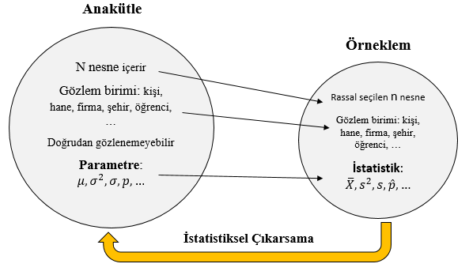
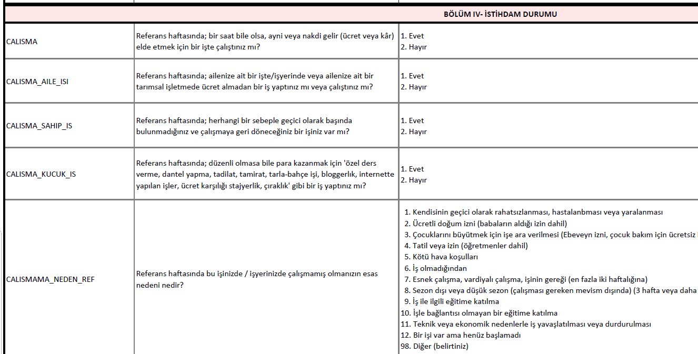
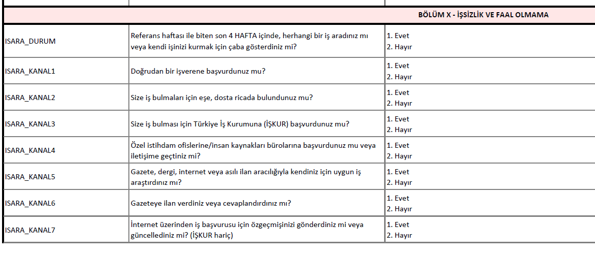
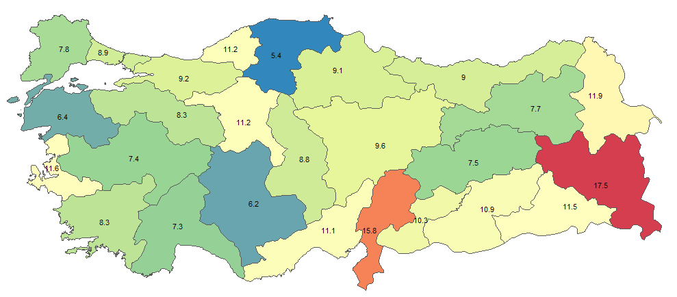
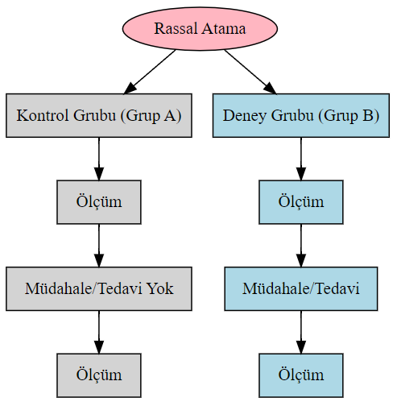
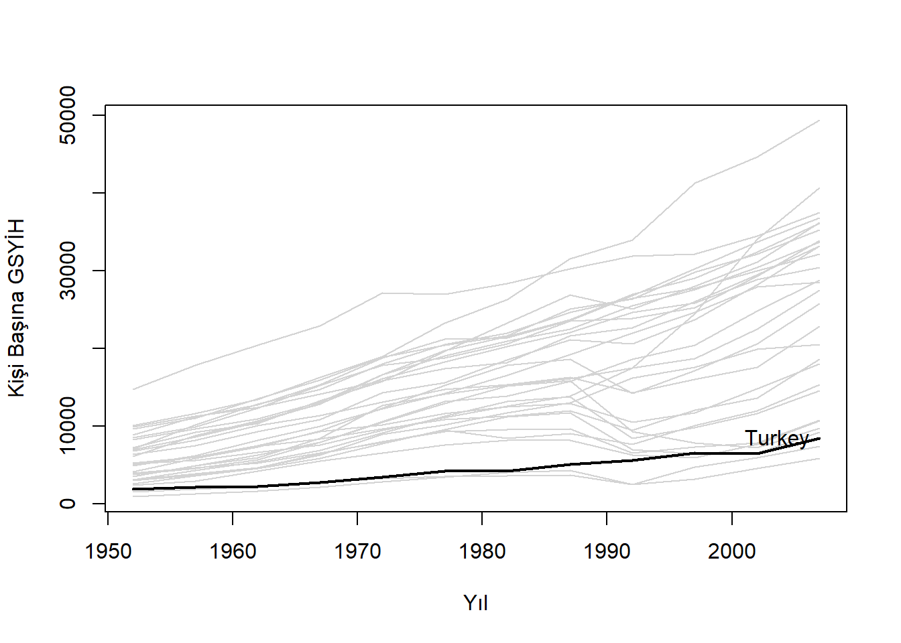

Bu bölümde, veri kümelerinin ve değişkenlerin temel özelliklerini ele alacağız.
Anakütle ve Örneklem
Bir veri kümesi ilgilendiğimiz birimlere ilişkin ölçümlerden ya da kayıtlardan oluşur. Gözlem birimi kişi, hanehalkı, tüketici, firma, şehir, bölge, ülke vb olabilir. Pratikte karşılaştığımız veri kümeleri, tüm birimlerin verilerini içeren bir anakütle ya da bu birimlerin belirli bir kısmını kapsayan bir örneklem olabilir.
Tanım 1 (Anakütle (popülasyon, evren)) Araştırma yapılan birim ya da nesnelere ilişkin eksiksiz veri kümesine anakütle (ya da evren/popülasyon) adı verilir. Anakütle, araştırma sorusuyla doğrudan ilgilidir ve genellikle çok geniş bir veri kümesini temsil eder.
Bir ülke ya da şehirdeki tüm hanehalkları, bir üniversitedeki tüm öğrenciler, bir endüstrideki tüm çalışanlar ya da bir fabrikada bir günde üretilen tüm ürünler anakütleyi oluşturabilir. Anakütle genellikle çok büyük olduğundan, her birimi gözlemlemek zor veya yüksek maliyetli olabilir. Bu durum, araştırmacıları birimlerin tamamını gözlemlemek yerine anakütlenin bir alt kümesi olan örneklem ile çalışmaya yönlendirir. İstatistiksel çıkarsamanın temel amacı, örneklem verilerinden hareketle anakütle hakkında bilgi edinmek ve genellemeler yapmaktır.
Tanım 2 (Parametre) Anakütleyi tanımlayan ve anakütlenin belirli bir özelliğine ilişkin bilgi içeren sabit değerlere parametre denir. Örneğin, Türkiye’deki tüm hanehalklarının ortalama geliri bir parametredir. Bir fabrikanın tüm ürünlerinin ortalama ağırlığı veya bir okuldaki tüm öğrencilerin başarı ortalaması birer parametredir.
Anakütle doğrudan gözlenemiyorsa parametreleri hesaplamak mümkün olmaz. Anakütle hakkında çıkarım yapmanın ve bilinmeyen parametreleri tahmin etmenin bir yolu anakütlenin tamamını gözlemlemek yerine daha küçük bir alt kümesine ilişkin bilgi toplamaktır.
Tanım 3 (Örneklem) Anakütle hakkında bilgi edinmek amacıyla belirli yöntemlerle seçilen anakütlenin bir alt kümesine örneklem (sample) adı verilir.
Örneklem anakütleden daha küçük olduğu için bilgi toplamak daha kolay ve ucuzdur. Bir şehirde yaşayan tüm hanelere ulaşmak yerine, bu anakütleyi temsil edebilen 500 gözlemli bir örneklem oluşturulabilir. Toplam öğrenci sayısı 40000 olan bir üniversitede, tesadüfi olarak seçilmiş 100 öğrenciden oluşan bir örneklem kullanılarak çıkarım ve genellemeler yapılabilir.

Şekil 1: Anakütleden örnekleme ve istatistiksel çıkarım süreci
Tanım 4 (İstatistik) Örneklemden hesaplanan ve anakütle parametrelerini tahmin etmek için kullanılan değerlere istatistik denir. İstatistikler, örneklem verilerinden elde edilen ve anakütle hakkında bilgi veren ölçümlerdir. Örneğin, bir şehirdeki rassal seçilmiş 1000 hanehalkının ortalama geliri, bir üniversitedeki 200 öğrencinin ortalama notu veya bir fabrikada üretilen 500 ürünün ortalama ağırlığı birer istatistiktir.
Parametre ile istatistik birbiriyle karıştırılmamalıdır. Parametre anakütleye ilişkin sabitlerdir ve genellikle pratikte bilinmezler. İstatistikler ise örnekleme ilişkin değerlerdir ve sabit değildir. Başka bir örneklem çektiğimizde istatistikler de değişir. İstatistikleri rassal (tesadüfi) değişken olarak düşünebiliriz.
Anakütlenin daha küçük bir temsili olarak düşünebileceğimiz örneklemi uygun yöntemlerle inceleyerek anakütle hakkında genellemeler ve çıkarımlar yapabiliriz. Temsili bir örneklem, anakütlenin özelliklerini doğru bir şekilde yansıtmalıdır. Örneklem ne kadar iyi seçilirse, anakütle hakkında o kadar güvenilir genellemeler yapılabilir. Yanlış veya eksik bir örneklem, yanıltıcı sonuçlara ve yanlış çıkarımlara yol açabilir.
Anakütleden örneklem almanın çok çeşitli yolları vardır. Başlıca örnekleme yöntemleri arasında basit rassal örnekleme, tabakalı örnekleme, ve sistematik örnekleme sayılabilir. Basit rassal örneklemede anakütledeki her birimin \(n\) boyutlu örneklemde olma olasılığı eşittir. Bir birimin örnekleme seçilmesi diğer brimlerin seçilmesini etkilemez. Ayrıca oluşturabileceğimiz \(n\) boyutlu tüm örneklemlerin seçilme olasılığı aynıdır. Anakütlenin bir listesi yapılabilirse örneklem birimleri bilgisayarda rassal sayı üreteçleri kullanılarak seçilebilir.
Tabakalı örneklemede, anakütle belirli özelliklere göre homojen alt gruplara (tabakalara) ayrılır ve her tabaka içinde rassal örneklemler çekilir. Örneğin, bir okulda öğrenci gruplarını sınıf düzeylerine göre (9. sınıf, 10. sınıf, vb.) ayırarak her sınıftan belirli sayıda öğrenci seçilerek anakütlenin daha iyi temsil edilmesi sağlanabilir.
Sistematik örnekleme birimleri düzenli aralıklarla seçer. \(N\) boyutlu bir listeden \(n\) elemanlı bir alt küme seçmek istiyorsak \(j=N/n\) olmak üzere, 1 ile j arasında rassal bir sayı ile başlarız. Daha sonra her j sırasındaki birimleri örnekleme dahil ederiz. Örneğin \(N=10000\) elemanlı bir listeden \(n=500\) elemanlı bir örneklem seçmek için ile \(j=10000/500=20\) arasında bir tamsayıyı tesadüfi olarak seçeriz. Bu sayı 10 olsun. Daha sonra buna \(j=20\) ekleriz ve 500’ü tamamlayana kadar seçime devam ederiz: 10, 30, 50, … vb.
Bunlara ek olarak başka örnekleme teknikleri de mevcuttur. Bu yöntemler, anakütlenin yapısına ve araştırmanın amacına bağlı olarak tercih edilebilir.
Bu bölümde inceleyeceğimiz araçlar veri kümesinin anakütle mi yoksa örneklem mi olduğuna göre değişebilir. Ancak çoğu kavram ve araç her iki veri türüne de uygulanabilir. Bazı kavram ve araçların tanımları anakütle ve örneklem için ayrı ayrı yapılmıştır.
Anakütle ya da örneklem verileri bilgisayarlarda çeşitli biçimlerde işlenebilir (vektör, liste, matris, veri çerçeveleri vb). Pratikte yaygın olarak bir spreadsheet formatında ya da R’ın veri çerçeveleri formatında saklayabiliriz. Bir veri çerçevesi yapı olarak spreadsheet formatına benzer. Satırlarda gözlem birimleri ve sütunlarda değişkenler yer alır. Hücrelerde ise gözlem değerleri bulunur. Örneğin tüm hanehalklarından oluşan bir anakütleden çekilmiş 2000 gözlemli bir rassal örneklem:
Bu veri kümesinde hanede yaşayan kişi sayısı, hanenin yıllık ve aylık geliri ve harcaması, tasarruf yapıp yapmadığı gibi çeşitli bilgiler bulunmaktadır.
Sütunlarda yer alan değişkenler gözlem birimlerine (hanehalklarına) ilişkin çeşitli bilgiler içerir. Hanehalkı bir adreste (konutta) yaşayan tüm bireylerden oluşan topluluk olarak tanımlanır. Yukarıdaki örnekte, birinci satırdaki 7373 numaralı hanehalkı 3 kişiden oluşmaktadır, yıllık geliri 61379 TL’dir ve tasarruf yapmaktadır. 2483 numaralı hanehalkı ise 6 kişiden oluşmaktadır, yıllık geliri 55287 TL’dir ve tasarruf yapmamaktadır.
Örneklem birimlerinden bilgi toplamanın en yaygın yöntemi anketlerdir. İktisatta ve diğer sosyal bilim alanlarında kullanılan verilerin önemli bir kısmı, anket ve araştırma sonuçlarına dayanmaktadır. Türkiye’de bu tür verilerin en önemli kaynaklarından biri Türkiye İstatistik Kurumu (TÜİK)’dur. TÜİK, hem makro hem de mikro düzeyde veri üretmek için düzenli aralıklarla çeşitli anketler ve araştırmalar gerçekleştirir. Mikro veriler, bireyler, hanehalkları veya firmalar gibi küçük birimlerin davranışlarını anlamak için kullanılır ve iktisadi analizlerde yaygın olarak kullanılır.
TÜİK’in iktisatta sıkça kullanılan mikro verileri topladığı başlıca anketler ve veri kümeleri şunlardır:
Hanehalkı İşgücü Araştırması (HİA): Türkiye’de işgücü piyasasına ilişkin istatistikleri üretmek amacıyla yapılan bu anket, işgücü, istihdam, işsizlik ve işgücüne katılım gibi temel göstergeleri sağlar.
Hanehalkı Bütçe Araştırması (HBA): Hanehalklarının gelir, tüketim ve harcama alışkanlıklarını ölçmek için yapılan bu anket, gelir dağılımı, yoksulluk ve tüketim eğilimleri gibi önemli konularda veri sunar. Hanehalkı tüketim sepeti ve ağırlıkları HBA ile belirlenir ve tüketici fiyat endeksinin hesaplanmasında kullanılır.
Gelir ve Yaşam Koşulları Araştırması (GYKA): Hanehalklarının gelir kaynakları, yaşam standartları ve yoksulluk durumlarına ilişkin bilgi sağlayan bu anket, gelir eşitsizliği, sosyal hareketlilik ve refah düzeyini ölçmeye yönelik detaylı veriler içerir.
Sanayi ve Hizmet İstatistikleri: Türkiye’deki firmaların üretim, istihdam, yatırım ve yenilikçilik faaliyetlerini ölçen bu araştırmalar, firma düzeyinde iktisadi analizler için değerli mikro veriler sağlar. Özellikle iktisadi büyüme, verimlilik analizleri ve sanayi dinamikleri üzerine yapılan çalışmalarda sıkça kullanılır.
Şekil 2: İstatistiki Bölge Birimleri Sınıflaması (İBBS) Düzey 2 bölgeleri
Anakütle tüm Türkiye’yi kapsamaktadır. Gözlem birimi ya da örnekleme birimi adrestir. TÜİK HİA’da 26 İBBS2 bölgesini ve Türkiye’yi temsil edecek şekilde tabakalı örnekleme yöntemini uygulamaktadır. Adrese Dayalı Nüfus Kayıt Sistemi (ADNKS) üzerinden elde edilen adreslerde yaşayan bireylerle yüzyüze ve telefon ile anketler yapılır. Toplanan demografik ve işgücü piyasası verilerinden hareketle çeşitli istatistikler hesaplanır.
İşsizlik oranı \[
\frac{\mbox{işsizlerin sayısı}}{\mbox{işgücü}}\times 100
\] olarak tanımlanır. Bir birey bir işte çalışmıyorsa, son dört hafta içerisinde aktif olarak iş arıyorsa ve iş bulduğu takdirde 2 hafta içinde işbaşı yapabilecek durumda ise işsiz olarak sınıflandırılır. İşgücü, “emek arzında bulunan çalışma çağındaki” yani 15 ve yukarı yaştaki nüfusu kapsar. Şekil 3 HIA anketinde bu bilgilerle ilişkisi soruları göstermektedir (kaynak: İşgücü İstatistikleri Mikro Veri seti, TÜİK yayın no 4738, 2023).
 
Şekil 3: Hanehalkı İşgücü Araştırması örnek anket soruları (Kaynak: TÜİK)
2023 yılında 15-64 yaş arası Türkiye geneli için işsizlik oranı %9.6 olarak tahmin edilmiştir. Şekil 4 26 bölge için işsizlik oranlarını harita üzerinde göstermektedir.

Şekil 4: İBBS2 düzeyinde işsizlik oranları
Veri Türleri
Veriler araştırma türüne göre deneysel veya gözlemsel olabilir. Verilerin toplanma biçimine ve zamanın nasıl ele alındığına göre de sınıflandırılabilir.
Deneysel Veriler
Deneysel veriler, araştırmacının bir veya daha fazla değişkeni kontrol ederek, bu değişkenlerin diğer değişkenler üzerindeki etkilerini gözlemlediği çalışmalardan elde edilir. Deneysel araştırmalarda temel amaç, belirli bir müdahalenin (örneğin yeni bir eğitim modelinin) bir hedef değişken ya da sonuç (örneğin sınav performansı) üzerindeki nedensel etkisini test etmektir.
Deney süreci kabaca aşağıdaki adımlardan oluşur:
Hipotez geliştirme: Araştırmacı, deney tasarımına teorik modellerden veya önceki bilimsel çalışmalardan hareketle oluşturulan bir hipotezle başlar. Bu hipotez, bir veya daha fazla bağımsız değişkenin (müdahale edilen faktör) hedef değişken (sonuç) üzerindeki etkilerine ilişkin sınanabilir bir önermedir. Örneğin, bir eğitimci yeni bir eğitim tekniğinin ilköğretim düzeyindeki öğrencilerin akademik performansları üzerindeki etkisine ilişkin bir hipotez oluşturur. Bu hipotez yeni tekniğin etkisiz olduğunu söyleyebilir.
Grupların belirlenmesi: Araştırma katılımcıları (denekler), genellikle ilgili anakütleden rastgele olarak, kontrol grubu ve deney grubu olmak üzere ikiye ayrılır. Kontrol grubu, müdahaleye maruz kalmazken, deney grubu müdahaleyi alır. Anakütleden tesadüfi örnekleme ile çekildiği varsayımı altında kontrol ve deney grupları her açıdan birbirine benzer olacaktır. Böylece hedef değişkende meydana gelen değişimler müdahaleye (tedaviye) atfedilebilir ve nedensel etki ölçülebilir.
Müdahale (tedavi/manipülasyon): Tedavi ya da müdahaleden önce hedef değişken ölçümleri (örneğin öğrenci performansı) her iki grup için yapılır. Daha sonra deney grubuna müdahale edilir, yani araştırmacı bağımsız değişkeni değiştirir (örneğin, yeni bir eğitim yöntemi uygulamak). Kontrol grubu karşılaştırma amacıyla tedavi ya da müdahaleden etkilenmez.
Veri toplama: Müdahaleden sonra, hedef değişken üzerindeki etkiler ölçülür (örneğin, sınav sonuçları) ve her iki grup için kaydedilir.
Sonuçların analizi: Müdahalenin etkilerini değerlendirmek için istatistiksel analizler yapılır ve hipotez test edilir. Eğer gerçekten tedavinin bir etkisi varsa, kontrol ve deney grupları arasında anlamlı bir fark oluşacaktır. Eğitim örneğimizde katılımcıların diğer özelliklerinin sabit kaldığı varsayımı altında deney grubunda ortalama performanstaki bir artış yeni programın etkisi olarak yorumlanabilir.
Bu derste istatistiksel çıkarsama başlığı altında, iki grup arasında ortalamada fark olup olmadığını nasıl sınayacağımızı öğreneceğiz.

Şekil 5: Deneysel veri süreci: rassal atama ile deney ve kontrol grupları
Örnek 2 (A/B Testing) A/B testi, özellikle dijital ortamda iki veya daha fazla seçeneğin (versiyonun) performansını karşılaştırmak için kullanılan basit ama güçlü bir deneysel tasarım yöntemidir. Bu yöntemde anakütle rassal olarak iki gruba ayrılır: bir grup “A” (kontrol grubu) ve diğer grup “B” (deney grubu). A grubu mevcut durumu, B grubu ise değiştirilen bir unsuru (fiyat, tasarım, ürün özellikleri vb.) deneyimler. Daha sonra iki grubun performansı karşılaştırılarak hangisinin daha etkili olduğu belirlenir. Bu testler, özellikle pazarlama, ürün geliştirme ve kullanıcı deneyimi iyileştirmelerinde yaygın olarak kullanılır.
A/B testleri dijital ortamda oldukça kullanışlıdır çünkü büyük veri kümelerine hızlıca erişilebilir ve sonuçlar kısa sürede analiz edilebilir. Web siteleri, uygulamalar, reklam kampanyaları ve dijital ürünlerin performansını iyileştirmek için A/B testleri sıkça tercih edilir. Şirketler, ürünlerinin fiyatını optimize etmek için farklı fiyat noktalarının nasıl bir performans gösterdiğini görmek amacıyla A/B testlerinden faydalanabilirler. Özellikle dijital ürünlerde, hızlı bir şekilde farklı fiyat stratejileri deneyip sonuçlarını analiz etmek mümkündür.
Örneğin, bir dijital ürün sağlayıcısının (bir müzik veya video akış platformunun) yeni bir premium üyelik fiyatlandırmasını test ettiğini düşünelim. Şirket, premium üyelik ücretini artırarak gelirini artırmayı hedefliyor, ancak bu fiyat artışının müşteri kaybına yol açıp açmayacağını öğrenmek istiyor. Bu durumda A/B testi şöyle uygulanabilir:
A Grubu (Kontrol Grubu): Mevcut fiyat 10 TL olarak belirlenmiştir ve bu grup, bu fiyat üzerinden üyelik almayı sürdürür.
B Grubu (Deney Grubu): Fiyat 15 TL’ye yükseltilir ve bu gruba, üyelik alırken 15 TL’lik fiyat sunulur.
Belirli bir süre sonra, her iki grubun davranışları analiz edilir. Örneğin, A grubu üyelerinin kaç tanesi üyeliklerini sürdürmüş veya yeni üyelik almış, B grubunun kaç üyesi daha yüksek fiyat karşısında üyeliğini sürdürmüş ya da iptal etmiş gibi metrikler incelenir. Bu metrikler arasında en önemlisi, grupların elde ettiği toplam gelir ve müşteri kayıp oranıdır. Bu basit A/B testi ile şirket, müşteri davranışlarına dayalı en uygun fiyatı belirleyebilir. Ayrıca, bu testleri farklı segmentler için (örneğin, farklı yaş grupları veya bölgeler) tekrar ederek daha ayrıntılı fiyatlandırma stratejileri geliştirebilir.
Gözlemsel Veriler
Gözlemsel veriler, araştırmacının herhangi bir müdahalede bulunmadığı, doğal süreçlerin izlendiği verilerden oluşur. Gözlemsel verilerin deneysel verilerden en önemli farkı araştırmacının deney ve kontrol gruplarını rassal bir şekilde oluşturamamasıdır. Gözlemsel veriler genellikle anket çalışmaları ve idari kayıtlardan elde edilen verilerdir. Bu tür araştırmalar, bazı özel durumlar dışında, nedensellik yerine değişkenler arasındaki ilişkileri incelemek için yapılır.
Gözlemsel verilerle yapılan çalışmalar, kontrol edilemeyen dış faktörlerin bulunabileceği ve bu nedenle nedensellikten ziyade korelasyonun ortaya çıkabileceği türden çalışmalardır. Örneğin gelir düzeyi ile eğitim seviyesi arasındaki ilişkiyi inceleyen bir araştırmacı, bireylerin eğitim düzeylerini değiştiremez; sadece mevcut veriler üzerinden gözlem yapar.
Açıkça deney yapılmasa da, bazı kısıtlayıcı varsayımlar altında, gözlemsel veriler kullanılarak nedensel çıkarım yapılması mümkündür. Deney-benzeri veriler (quasi-experimental data) deney ve kontrol gruplarının kendiliğinden oluştuğu gözlemsel verilerdir. Örneğin, birbirine çok benzer iki şehirden biri belirli bir tarihte çok sayıda göç almış olsun. Göç alan şehir (deney grubu) göç almayan şehirle (kontrol grubu) karşılaştırılabilir; örneğin göçün istihdam ya da fiyatlar üzerindeki etkisi incelenebilir. Rassal atama yapılmadığı için (göç kendiliğnden oluşuyor) bu tür verilerden nedensel çıkarım yapılabilmesi için bazı özel varsayımların yapıldığı ileri düzey ekonometrik tekniklere ihtiyaç duyulur.
Veri Organizasyonuna Göre
Veriler ölçüm ve toplanma biçimine, ve zamanın niteliğine göre dört farklı başlık altında toplanabilir:
Yatay kesit veri (Cross-sectional data): Belirli bir zaman diliminde, birden fazla birimden (birey, hanehalkı, firma, şehir, vb.) toplanan verileri ifade eder. Yatay kesit verilerin kaynağı çoğunlukla idari kayıtlar ya da bilimsel anketlerdir. Bu anketleri araştırmacı kendi tasarlayacağı gibi diğer kurum ve kuruluşlar tarafından da hazırlanabilir. Örneğin, TÜİK tarafından her yıl yapılan hanehalkı ve fert araştırmaları (HHBA, HIA, vb) bir anket sonucunda farklı kişilere ait yaş, gelir ve eğitim düzeyi gibi bilgiler içerir. Gelir İdaresi Başkanlığı tarafından belirli bir yılda vergi mükelleflerinin bilanço ve gelir tablosu gibi finansal raporlarından oluşturulan idari kayıtlar da yatay kesit veri kümesi oluşturur.
Zaman serisi (Time series data): Aynı birimden, birbirini düzenli biçimde takip eden belirli zaman dilimlerinde alınan verileri ifade eder. Doğal olarak verilerin bir zaman sırası (kronoloji) vardır ve bu değiştirilemez. Örneğin, bir ülkenin yıllık GSYİH değerleri, aylık enflasyon oranları, bir finansal varlığın günlük değerleri ve getirileri zaman serisi verisidir. Bu veri türü özellikle finans ve makroiktisat alanlarında geliştirilen teori ve hipotezlerin değerlendirilmesinde, geleceğe dönük öngörü yapılmasında, zaman içerisindeki eğilimlerin ve dalgalanmaların analizinde kullanılır.
Zaman serilerini görselleştirmenin en kolay yolu x ekseninde zamanın ve y ekseninde ölçümlerin olduğu çizgi grafiğidir. Şekil 6 BIST 100 endeksinin 02/01/2003-29/09/2021 dönemine ait günlük kapanış değerlerini göstermektedir.
Birleştirilmiş yatay kesit (Pooled cross-sectional data): Farklı zaman dilimlerinde toplanmış yatay kesit verilerinin birleştirilmesiyle oluşturulan veri kümesidir. İki boyutludur; hem zaman hem de yatay kesite ilişkin bilgi içerir ancak yatay kesit birimleri takip edilmez. Bu tür veriler, farklı dönemlerdeki birimlerin özelliklerini inceleme imkanı sunar. Örneğin, TÜİK hanehalkı bütçe anketleri her yıl ilgili anakütleden rassal örnekleme yöntemiyle farklı birimlerden veri toplar. Bu farklı hanelerden oluşan yatay kesit verileri bir araya getirerek birleştirilmiş yatay kesit veri kümesi elde edebiliriz. Böylece hanehalkı tüketiminin zaman içindeki eğilimini inceleyebiliriz.
Panel veri (Panel or longitudinal data): Aynı birimlerin belirli zaman dilimlerinde gözlemlenmesiyle oluşturulan veri kümesidir. Örneğin, belirli bir grup bireyin yıllık gelir düzeyleri üzerinde yapılan bir araştırma panel veri olarak kabul edilir. Bir sektördeki firmaların zaman içindeki yatırım kararları ve buna ilişkin değişkenler bir panel veri kümesi oluşturur. Bu tür iki boyutlu veri, hem zaman içindeki değişimleri hem de birimler arası ilişkileri analiz etme olanağı sağlar.
Örnek 4 Panel veriye bir örnek olarak ülkelerarası Gapminder verisi gösterilebilir. Bu veri kümesinde, ülkelerin 5 yıllık dönemlerdeki yaşam beklentisi, nüfus, kişi başına düşen gayri safi yurt içi hasıla (GSYİH) gibi değişkenler yer alır. Bu verilerle ülkelerin yıllar boyunca gelişimini izlemek mümkündür.
# install.packages("gapminder") # önceden yüklenmelilibrary(gapminder)head(gapminder)
# A tibble: 6 × 6
country continent year lifeExp pop gdpPercap
<fct> <fct> <int> <dbl> <int> <dbl>
1 Afghanistan Asia 1952 28.8 8425333 779.
2 Afghanistan Asia 1957 30.3 9240934 821.
3 Afghanistan Asia 1962 32.0 10267083 853.
4 Afghanistan Asia 1967 34.0 11537966 836.
5 Afghanistan Asia 1972 36.1 13079460 740.
6 Afghanistan Asia 1977 38.4 14880372 786.
Yukarıda bu veri kümesinin ilk 6 satırı yazdırılmıştır. Zaman boyutu year, birim boyutu country ile temsil edilmiştir. Ülkelerin her 5 yıllık dönem için bir gözlemi vardır (her değişken için). Birleşik veri yapısından görüldüğü gibi hem zaman hem de yatay kesit boyutunu bir arada içerir. Böylece hem zaman içindeki değişimi hem de birimler arasındaki ilişkileri inceleyebiliriz.

Şekil 7: Bir panel veri örneği: Avrupa Ülkelerinde Kişi Başına Düşen GSYİH (1952-2007) (kaynak: Gapminder)
Şekil 7 Gapminder panel veri kümesinde yer alan Avrupa ülkelerinin kişi başına GSYİH grafiğini göstermektedir. Panel veri bize zamansal değişimleri ve birimlerin arasındaki ilişkileri gözlemleme fırsatı sunar. Şekil 7 tüm ülkeleri arkaplanda gösterirken, sadece Türkiye’yi öne çıkarıyor. Böylece, Türkiye’yi diğer Avrupa ülkelerinin kişi başına düşen GSYİH verileri arasında açık bir şekilde görebiliyoruz.
Nicel Değişkenler
Betimsel analizde karşılaşılan değişkenler farklı özelliklere ve ölçüm düzeylerine sahip olabilir. Değişkenleri genel olarak nicel (kantitatif) ve nitel (kalitatif) olmak üzere ikiye ayırabiliriz. Nicel değişkenler kendi içinde aralık değişkenleri ve oransal değişkenler olmak üzere ikiye ayrılır.
Aralık Ölçeği
Aralık (interval) değişkenleri, ölçülen değerler arasındaki “aralığın” veya “farkın” anlamlı olduğu değişkenlerdir. Bu tür değişkenler, sıralı bir şekilde düzenlenebilir ve aralarındaki farklar sabit ve anlamlıdır.
Aralık değişkenlerinin en önemli özelliklerinden biri, sıfır noktasının keyfi veya anlamsız olmasıdır. Yani, sıfır değeri mutlak bir sıfırı (yokluk, hiçlik) temsil etmez. Örneğin, sıcaklık ölçümleri (Celsius veya Fahrenheit) bir aralık değişkenidir; burada sıfır derece sıcaklığın yokluğunu ifade etmez.
Aralık değişkenleri üzerinde toplama ve çıkarma işlemleri anlamlıdır, ancak çarpma ve bölme işlemleri genellikle anlamlı değildir. Bu, sıfır noktasının keyfi olmasından kaynaklanır.
1950-2023 döneminde bazı illerdeki ortalama sıcaklar şöyledir:
# Bazı illerin yıllık ortalama sıcaklıkları, Celsius derece# 1950-2023 dönem ortalamasıtempC <-data.frame(il =c("İstanbul", "Ankara", "İzmir", "Ardahan"), ort_sicaklik =c(15.3, 12, 18, 3.7))tempC
il ort_sicaklik
1 İstanbul 15.3
2 Ankara 12.0
3 İzmir 18.0
4 Ardahan 3.7
Yıllık sıcaklık ortalamalarına göre bu dört bölge arasında en sıcak il İzmir, en soğuk il ise Ardahan’dır. Ancak buradan hareketle İzmir’in Ardahan’dan yaklaşık 5 kat daha sıcak olduğunu söyleyemeyiz.
Sıfır noktasının keyfiliğini görmenin bir yolu Celsius-Fahrenheit dönüştürmesi yapmaktır. Celsius \(^{\circ}C\) ile Fahrenheit cinsinden sıcaklık arasındaki ilişki aşağıda verilmiştir: \[
F = 1.8~C+32
\] Buna göre santigrat cinsinden 0 noktası Fahrenheit cinsinden 32 \(^{\circ}F\) dereceye karşılık gelir. Bu yeni değişkeni veri çerçevesine ekleyelim:
il ort_sicaklik Fahrenheit
1 İstanbul 15.3 59.54
2 Ankara 12.0 53.60
3 İzmir 18.0 64.40
4 Ardahan 3.7 38.66
Suyun donma noktası keyfi olarak tanımlandığı için değerlerin birbirlerine oranları alınmaz. Aralıklar ise anlamlı bir biçimde yorumlanabilir. Her iki sıcaklık derecesi cinsinden 0 noktasının sıcaklığın olmadığı anlamına gelmediğine dikkat ediniz.
Oransal Ölçek
Oransal (ratio) değişkenler, hem aralıkların hem de oranların anlamlı olduğu nicel değişkenlerdir. Oransal ölçekli değişkenler anlamlı bir şekilde sıralanabilir, aralarındaki farklar ve oranlar yorumlanabilir. Oransal değişkenlerin en belirgin özelliği, mutlak sıfır noktasına sahip olmalarıdır. Bu, sıfır değerinin tam bir yokluk veya var olmama durumunu ifade ettiği anlamına gelir. Örneğin, ağırlık ve uzunluk ölçümleri oransal değişkenlere örnektir; sıfır ağırlık ya da sıfır uzunluk, hiçbir şeyin olmadığını gösterir.
Oransal değişkenler üzerinde tüm aritmetik işlemler (toplama, çıkarma, çarpma, bölme) anlamlıdır. Bu özellik, bu tür değişkenlerin analizinde daha geniş bir esneklik sağlar. İktisat, işletme, finans, ve sosyal bilim alanlarındaki bir çok değişken bu sınıfa girer. Örneğin hanelerin aylık gelir ve harcamaları oransal değişkenlerdir.
Buna göre ilk hane aylık ortalama gelirinin yaklaşık %58’ini harcamaktadır. 3699 nolu hane ise gelirinden daha fazlasını harcamaktadır (yaklaşık %27 daha fazla). Her iki değişken için 0 değeri mutlak yokluğu ifade etmektedir. Ancak veri kümesinde bazı gözlemlerde tam olarak 0 değerini almaları gerekmez. Bu örneklemde aylık ortalama gelir ve harcaması 0 olan bir hane yoktur.
Nitel Değişkenler
Nitel (kalitatif) değişkenler nominal ve ordinal olmak üzere iki gruba ayrılır.
Nominal ölçek
Nominal değişkenler, sıralama veya hiyerarşi içermeyen kategorik değişkenlerdir. Bu değişken türü, etiketler veya isimler kullanarak verileri kategorize eder. Örneğin, cinsiyet, kan grubu, medeni durum gibi değişkenler nominal ölçeklidir.
Hanehalkı harcama örnekleminde tasarruf değişkeni bu gruba girer:
Bu örneklemde tasarruf değişkeni iki karakterden oluşan değerler alır: hane tasarruf yapıyorsa “Evet”, yapmıyorsa “Hayır”.
table(hane_ornek$tasarruf)
Evet Hayır
520 1480
Buna göre 520 hane tasarruf yapabiliyorken 1480 hane tasarruf yapmamaktadır.
Veri kümelerinde bazı durumlarda nominal (kategorik) değişkenlere sayısal değerler atanabilir. Bu durum, özellikle veri analizi ve modelleme süreçlerinde dikkat edilmesi gereken önemli bir konudur. Nominal değişkenlerin sayısal değerler alması, yanlış analiz sonuçlarına yol açabilir. Bu nedenle, aşağıdaki noktalara dikkat edilmelidir:
Nominal Değişkenlerin Tanımı: Nominal değişkenler, belirli kategorilere ayrılmış veriler olup, bu kategoriler arasında herhangi bir sıralama veya sayısal ilişki yoktur. Örneğin: cinsiyet (Erkek = 1, Kadın = 2) veya renk (Kırmızı = 1, Mavi = 2, Yeşil = 3).
Sayısal Değerlerin Yanlış Yorumu: Nominal değişkenlere atanan sayısal değerler, sayısal işlemler için kullanılmamalıdır. Örneğin, “Erkek” ve “Kadın” için 1 ve 2 sayılarının atanması, bu sayıların arasında bir büyüklük veya sıralama ilişkisi olduğu anlamına gelmez.
Kategorik Verileri Kodlama: Kategorik verilerin sayısal modellere dahil edilmesi gerektiğinde, genellikle ikili (binary) temsil (“one-hot encoding”, “dummy variable”) gibi yöntemler kullanılır. Bu yöntemler, her kategoriyi ayrı bir ikili (0/1) değişken olarak temsil eder.
Örneğin hanehalkı veri kümesinde sigara değişkeni hanede sigara içen olup olmadığına ilişkin bilgi vermektedir:
Bu değişken hanede sigara içen biri varsa 1, yoksa 2 değerini alan nominal bir değişkendir. Sigara’yı ikili (0/1) değişken biçiminde yeniden kodlayabiliriz:
# "sigara" sütununu kategorik değişken olarak tanımlamahane_sigara$sigara_faktor <-factor(hane_sigara$sigara, levels =c(1, 2), labels =c("Evet", "Hayır") )# kukla değişken olarak tanımla sigara_kukla <-model.matrix(~ sigara_faktor -1, data = hane_sigara)cbind(hane_sigara, sigara_kukla)
sigara_faktorEvet sigara içenlerin olduğu bir hanede 1, diğerlerinde 0 değerini almaktadır. sigara_faktorHayır ise sigara içilmeyen hanelerde 1, diğerlerinde ise 0 değerini almaktadır.
Ordinal ölçek
Ordinal değişkenler, sıralama veya derecelendirme içeren kategorik değişkenlerdir. Bu tür değişkenlerde, kategoriler arasında bir sıra veya hiyerarşi vardır. Ordinal değişkenler, sıralanabilir kategoriler içerir. Kategoriler arasındaki farklar sabit veya standart değildir. Örnek olarak, eğitim seviyesi, memnuniyet dereceleri, ürün kalite dereceleri verilebilir.
Örneğin memnuniyet bir ürünün değerlendirmesine ilişkin 6 gözlem içeren bir faktör değişkenidir:
[1] Düşük Orta Yüksek Orta Orta Yüksek
Levels: Düşük < Orta < Yüksek
Hane verilerinde yer alan saglik_merkezi_erisim ve zor_egitim_erisim değişkenleri sıralı kategorik değişkenlerdir:
veri <- hane_ornek[1:10,c("saglik_merkezi_erisim", "saglik_merkezi_erisim_olcek")]veri
# A tibble: 10 × 2
saglik_merkezi_erisim saglik_merkezi_erisim_olcek
<dbl> <chr>
1 5 Çok zor
2 2 Kolay
3 1 Çok kolay
4 2 Kolay
5 2 Kolay
6 2 Kolay
7 2 Kolay
8 2 Kolay
9 1 Çok kolay
10 2 Kolay
Hanenin bulunduğu yerden sağlık merkezlerine erişimin kolaylığına ilişkin bilgi içeren bu değişken 5 seviyeden oluşur. Bu seviyeler 1-5 arasında sayısal değerlerle ifade edilmiştir. Buna göre 1 (Çok kolay), 2 (Kolay), 3 (Orta), 4 (Zor) ve 5 (Çok zor). saglik_merkezi_erisim_olcek bu bilgileri karakter formatında içerir. İstenirse bu değişken faktör değişkeni olarak da tanımlanabilir.